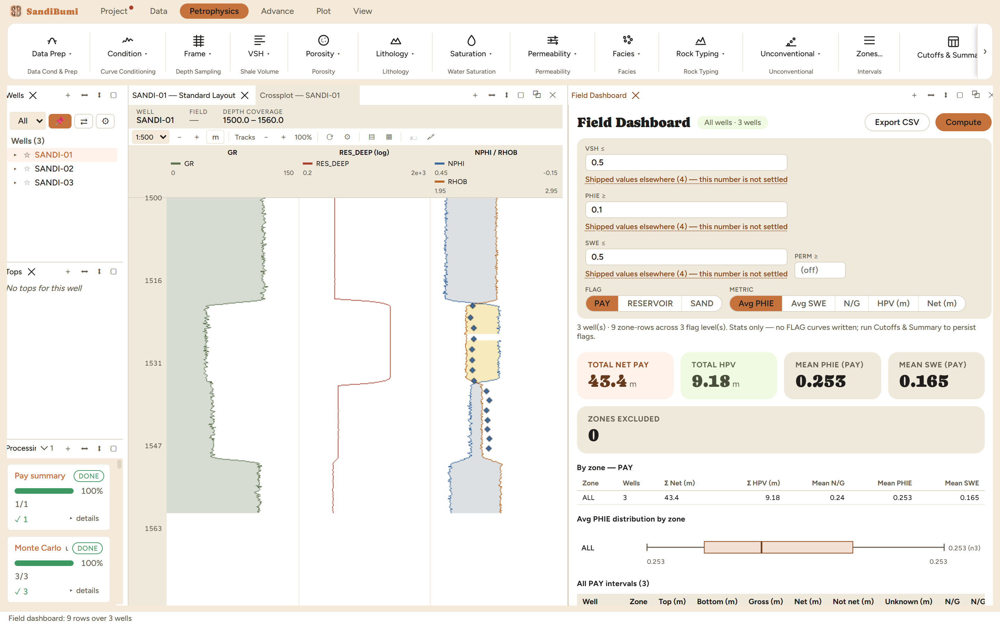

The Field Dashboard is the field-scale read of the pay summary: one pane
with the roll-up numbers, a by-zone table, distribution box plots and a
sortable per-interval grid across every well in scope. Reach for it when the
question moves from "what does this well hold" to "where does the field's
pay sit and which wells carry it".
The pane

All three wells at the study cutoffs: total net pay
43.4 m, total HPV 9.18 m, net-weighted mean PHIE 0.253 and
SWE 0.165 over pay, zero zones excluded.
It computes, it does not write. The pane states its own
contract in the scope line:
3 well(s) · 9 zone-rows across 3 flag level(s). Stats only — no FLAG curves
written; run Cutoffs & Summary to persist flags.
FLAG and METRIC pills choose one tier (PAY, RESERVOIR, SAND)
and one quantity (Avg PHIE, Avg SWE, N/G, HPV, Net) for the
distribution plots: one question per picture, deliberately.
The KPI cards read the same aggregation the export writes, so
the dashboard and the workbook cannot disagree.
Export CSV takes the grid wherever the mapping or reporting
happens.
Step by step
Open Petrophysics ▸ Batch ▸ Field
Dashboard…, set the cutoffs (the same set the pay summary
used) and press Compute.
Read the KPIs, then the by-zone table, then sort the intervals grid
by the column the question is about.
Reading the result
The intervals grid splits every well's section three ways, and the split
is the honest part: each example well carries 60.0 m gross, of which
14.5 m is net pay, 14.6 m evaluated and failed, and 30.9 m is
Unknown: samples where a required input is missing, so the cutoffs
could not be evaluated at all. Two N/G columns follow from that: 0.24
against gross, 0.50 excluding the unknown interval. They answer different
questions (the first is the volumetric ratio, the second is the
success rate where an answer exists), and quoting one as the other is
a reserves error, so the grid carries both.
Zones that were never interpreted are counted in ZONES EXCLUDED rather
than averaged in as zeros; a zero from "no answer" dragging down a field
mean would be the blank-is-not-zero rule broken at field scale.
QC and pitfalls
A large Unknown column is a data problem, not a geology
result. On the example wells it is the interval outside the
interpreted zone; on a real field it is often one missing curve in one
delivery, worth fixing before the roll-up is quoted.
Means here are net-weighted. A thin excellent interval does
not outvote a thick fair one; check the weighting matches whatever the
report's volumetrics assume.
The dashboard follows the active well group. A filtered group
silently scopes every number on the pane; the scope tag beside the
title says what was counted.